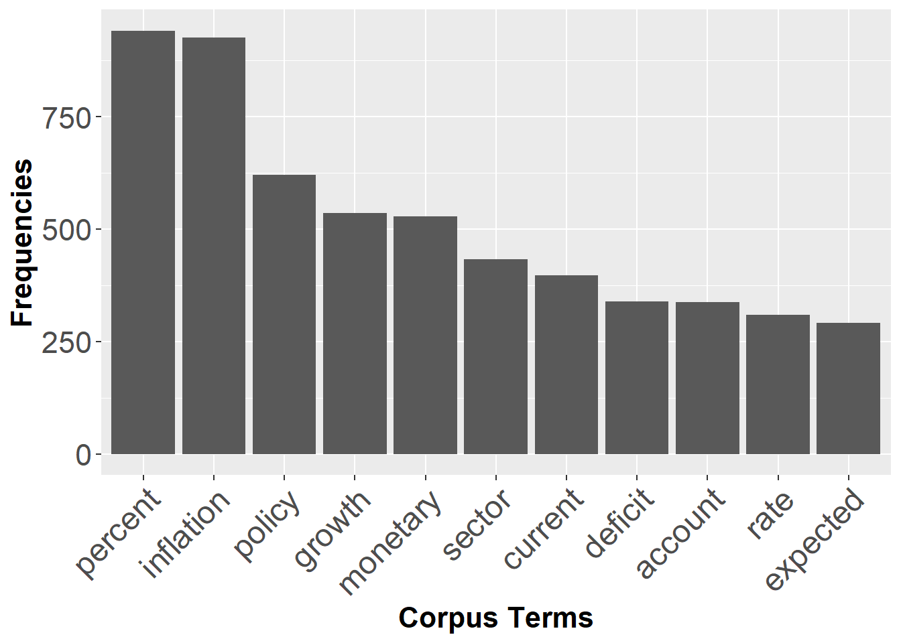
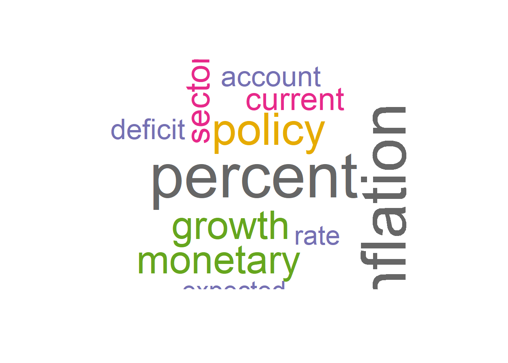

<<PlainTextDocument>>
Metadata: 7
Content: chars: 5711
MONETARY POLICY COMMITTEE
STATE BANK OF PAKISTAN
Monetary Policy Statement
January 2018
Pakistan’s economic growth is on track to achieve its highest level in the last eleven years. Average
headline inflation remains within the forecast range of SBP, but core inflation has continued to
increase. Fiscal deficit for H1-FY18 is expected to fall close to the last year’s 2.5 percent. There has
been visible improvement in export growth and remittances are marginally higher. However, largely
due to high level of imports the current account deficit remains under pressure. The exchange rate
adjustment in December 2017 is expected to help ease the pressure on the external front.
The progress in the real sector indicates that agriculture sector is set to perform better for the
second year in a row. Production of all major Kharif crops, except maize, has surpassed the level of
FY17. Similarly, large scale manufacturing (LSM) recorded a healthy broad-based growth of 7.2
percent during Jul-Nov FY18 as compared to 3.2 percent during the same period last year. While
there could be some deceleration in LSM growth due to sector specific issues such as sugar, POL
and fertilizer, overall industrial activity is likely to remain strong. Benefiting from both infrastructure
and CPEC related investments, construction and its allied industries are expected to maintain their
higher growth momentum. After incorporating the impact of commodity sector dynamics on the
services sector, the real GDP growth is projected to be around 5.8 percent, significantly higher than
FY17, but marginally lower than the annual target of 6 percent for FY18. This is largely due to
expectations of a below-target wheat crop because of a reduction in area under cultivation.
Average headline inflation for H1-FY18 stands at 3.8 percent. Meanwhile, core inflation (non-food-
non-energy) continued to maintain its higher trajectory, and clocked in at 5.5 percent during the first
half of the year as compared to 4.9 percent last year. This together with a lagged impact of PKR
depreciation and rising international oil prices are likely to increase inflation in the coming months.
Taking into account the impact of all these developments, while the average inflation for FY18 is
still projected to fall in the range of 4.5 to 5.5 percent, end of fiscal year YoY inflation is likely to
inch towards the annual target of 6 percent.
Broad money supply grew marginally by 1.9 percent during 1st Jul-12th Jan FY18.. This is a reflection
of the decline in NFA and government efforts to contain expenditures. Higher tax collection and
proceeds from the issuance of Sukuk and Eurobond have led to reduction in net budgetary
borrowing which stood at Rs. 401.9 billion during 1st Jul-12th Jan FY18 as compared to Rs. 470.4
billion in the corresponding period of the previous year. Moreover, the delay in the sugar crushing
season also contributed to a moderation of demand in private sector credit.
On the external front, export receipts posted the highest growth in the last seven years of 10.8
percent in H1-FY18 against a reduction of 1.4 percent in H1-FY17. Worker’s remittances also
recorded growth (2.5 percent) during the first half of the year as compared to a decline in the same
period last year. However, favorable impact of these positives was overshadowed by the
continuation of strong growth in imports of goods and services. The current account deficit
widened to US$ 7.4 billion during the first half of the year, which was 1.6 times of the deficit during
the same period last year. Developments in financial accounts show that one-fifth of this deficit was
financed by healthy foreign direct investments inflows, and the rest was managed by the official
flows and the country’s own resources. As a result, SBP’s liquid foreign exchange reserves
Page 1
MONETARY POLICY COMMITTEE
STATE BANK OF PAKISTAN
witnessed a decline of US$ 2.6 billion since end June 2017 to reach US$ 13.5 billion as of 19th
January 2018. Going forward, the PKR depreciation in December 2017, the export package, the
lagged impact of adjustments in regulatory duties, favorable external environment, and expected
increase in workers’ remittances, will contribute to a gradual reduction in the country’s current
account deficit. While increase in international oil prices pose a major risk to this assessment,
managing overall balance of payments in near term depends on the realization of official financial
flows.
Four key factors of Pakistan’s economy have witnessed important changes since November 2017
impinging upon the policy rate decision. Firstly, PKR has depreciated by around 5 percent.
Secondly, oil prices are hovering near USD 70 per barrel. Thirdly, a number of central banks have
started to adjust their policy rates upwards adversely affecting PKR interest-rate differentials vis-à-
vis their currencies. Fourthly, multiple indicators show that the output gap has significantly
narrowed indicating a buildup of demand pressures.
Based on these developments, MPC is of the view that in order to preempt overheating of the
economy and inflation breaching its target rate, this is the right time to make a policy decision that
would balance growth and stability in the medium to long term. Accordingly, the Monetary Policy
Committee has decided to raise the policy rate by 25 bps to 6.00 percent.
Page 2Text Mining Monetary Policy Statements
A Primer
1 Introduction
This study explores text data analysis of monetary policy statements issued by State Bank of Pakistan over past 18 to 20 years. Dealing with text is typically not considered as important in training of economics and social sciences for data analysis. This is in direct contrast with how often it has to be dealt with prior to more common analysis, or how interesting it might be to have text be the focus of analysis Text Analysis in R. This paper/tutorial aims at providing a sense of the things one can do with text, and the sorts of analyses that might be useful. In era of ML, AI and NLP, text analysis is becoming more and more important as human may miss some important information and computer-based approaches can process and summarise text more efficiently than humans. Also, textual analysis may extract meaning from text missed by human readers, who may overlook certain patterns because they do not conform to prior beliefs and expectations (Herasymova, 2022). There are many studies which have done in detail textual analysis of central bank statements Shapiro and Wilson (2021). I have mainly followed Benchimol, Kazinnik, and Saadon (2022) guidelines in this paper.
With this motivation, I do textual analysis to monetary policy statements by the State Bank of Pakistan (SBP) which is aimed at understanding the monetary policy stance of the central bank. The monetary policy statement (MPS) is a document that is released by the central bank to communicate its monetary policy stance to the public. The MPS is released after the Monetary Policy Committee (MPC) meeting, which is usually held every two months. The MPS contains information on the current state of the economy, the central bank’s assessment of the economy, and the central bank’s monetary policy stance. Monetary policy statements are an important source of information for researchers, as they provide information on the central bank’s monetary policy stance, which can have implications for the economy. I have extracted monetary policy statements from the State Bank of Pakistan (SBP) website, and used text mining techniques to extract information from these statements.
The primary objective of these statements is to inform and guide economic analysts and other stakeholders involved in advising traders within the financial markets. They provide insights into recent economic developments and anticipate future trends, thereby facilitating informed decision-making. Therefore, it becomes all the important to analyse how effectively SBP communicates through its policy statements. In assessing the effectiveness of these MPS, we employ textual analysis techniques. Unstructured data, often rich in textual content, encompasses a wide array of sources such as news articles, social media posts, Twitter feeds, transcriptions from videos, and formal documents. Its abundance offers fresh opportunities and simultaneous challenges for researchers and research institutions alike. In this paper, I explore various methodologies for text analysis and propose a systematic approach to leverage text mining techniques. Furthermore, I examine potential empirical applications of these methods.
This paper focuses on the primer of extracting information from unstructured data, and the potential applications of text mining in the context of monetary policy statements. Quantitative analysis of text data is a rapidly growing field, and the methods and techniques used in this paper are not exhaustive. These methods are in extensive use in political science, sociology, linguistics and information security but are not in wide use in economics and finance in Pakistan. Nevertheless, there is a growing interest in the use of text mining in economics and finance, and this paper aims to provide a starting point for researchers interested in text mining and its applications in economics and finance. Recent advances in open source software and the availability of large text datasets have made it easier for researchers to apply text mining techniques to their research. As text data is usually unstructured, therefore, it is important that a reproducible and systematic approach is used to extract information from text data. The principal goal of text mining is to capture and analyze all possible meanings embeded in text. Text mining transform unstructured data into structured data, and to extract information from text data. Text mining is a rapidly growing field, and has applications in a wide range of fields, such as information retrieval, natural language processing, and data mining. Moreover, it analyzes- patterns and trends in the text data,the sentiment of text data, classify text data, to categorize the text data among many other functions.
This study aims at providing a systematic approach to text mining, and to demonstrate the potential applications of text mining in the context of monetary policy statements. Monetary policy and fiscal policy are two of the most important tools that governments and central banks use to manage the economy. Monetary policy refers to the actions taken by the central bank to influence the money supply and interest rates in the economy. The central bank uses monetary policy to achieve its objectives, such as price stability, full employment, and economic growth. The central bank uses a variety of tools to implement monetary policy, such as open market operations, discount rate changes, and reserve requirement changes. The central bank communicates its monetary policy stance to the public through monetary policy statements. Therefore, it is important to analyze these statements to understand the central bank’s monetary policy stance. Text mining techniques can be used to extract information from monetary policy statements, and to analyze the central bank’s monetary policy stance. This paper/tutorial aims to provide a systematic approach to text mining, and to demonstrate the potential applications of text mining in the context of monetary policy statements.
The paper is organized as follows. Section 2 provides an overview of text mining and its applications in economics and finance. Section 3 provides a systematic approach to text mining, and Section 4 provides an overview of the potential applications of text mining in the context of monetary policy statements. Section 5 concludes the paper.
2 MPS Data
I do text analysis using topic modeling, sentiment, and linguistic analysis to the Monetary Policy Statements (MPS) of the State Bank of Pakistan from 2005-2024 to capture the focus, tone, and clarity of monetary policy communications. Overall I have total 81 MPS documents from 2005 to 2024 used in this analysis. I have included all MPS shown on SBP website link. The data is in PDF format and I have used the pdftools package to extract the text from the PDF files. All these statements are stored as corpus. There are other forms of data storage in R such as tibble and dataframe but I have used tm package to store data as corpus. The text is then cleaned and pre-processed to remove any unwanted characters and symbols. The text is then tokenized and converted to a document term matrix to analyze the text data. tm package is used to clean and preprocess the text data, and to create the document term matrix. tidyverse and tidytext packages are used to analyze and visualize the text data.
Following is an example of one of the statment from the corpus.
[1] "01012018.txt" "02032023.txt" "04042023.txt" "05102012.txt" "07072022.txt"
[6] "07082022.txt" "08032022.txt" "08062012.txt" "08102011.txt" "09042016.txt"
[11] "10102022.txt" "12042013.txt" "12062023.txt" "12092015.txt" "12122023.txt"
[16] "13042012.txt" "13112013.txt" "14072018.txt" "14092023.txt" "14122012.txt"
[21] "14122021.txt" "15032014.txt" "15052020.txt" "15112014.txt" "16042020.txt"
[26] "16072019.txt" "16092019.txt" "17032020.txt" "17052014.txt" "19032021.txt"
[31] "19112021.txt" "20052017.txt" "20052019.txt" "20092014.txt" "20092021.txt"
[36] "21032015.txt" "21052011.txt" "21052016.txt" "21062013.txt" "21092020.txt"
[41] "21112015.txt" "22012021.txt" "22072017.txt" "22082022.txt" "22112019.txt"
[46] "23012023.txt" "23052015.txt" "23052022.txt" "23112020.txt" "24012022.txt"
[51] "24032020.txt" "24052010.txt" "24092016.txt" "24112009.txt" "24112017.txt"
[56] "25032017.txt" "25052018.txt" "25062020.txt" "25112022.txt" "26032011.txt"
[61] "26062023.txt" "26112017.txt" "27032010.txt" "27072021.txt" "28012017.txt"
[66] "28012020.txt" "28052021.txt" "29012024.txt" "29032019.txt" "29092010.txt"
[71] "29092017.txt" "29092018.txt" "29112010.txt" "30012016.txt" "30032018.txt"
[76] "30072016.txt" "30102023.txt" "30112011.txt" "30112018.txt" "31012019.txt"
[81] "31072023.txt"2.1 Cleaning and Preprocessing
The text data is cleaned and prepossessed to remove any unwanted characters and symbols. Text cleaning (or text processing) makes an unstructured set of texts uniform across and within and eliminates idiosyncratic characters or meaningless terms. Text cleaning can be loosely divided into a set of steps as shown below. Stop words are the most common words in a language, such as ‘the’, ‘is’, ‘at’, ‘which’, and ‘on’. However, before removing stop words, all words are converted to lowercase to make the text uniform using the command corpus <- tm_map(corpus, tolower. These words are often removed from the text data because they do not carry much meaning. Numbers are also removed from the text data using tm_map(corpus, removeNumbers) in most of the cases. One final step in data cleaning is to stem the words. Stemming is the process of reducing words to their root form. For example, the words ‘running’, ‘runs’, and ‘ran’ are all reduced to the root form ‘run’.
Below is the text left from corpus after removing the stop words.
monetary policy committee monetary policy statement’s economic growth track achieve highest level last eleven years average headline inflation remains within forecast range core inflation continued increase fiscal deficit h fy expected fall close last ’s percent visible improvement export growth remittances marginally higher however largely due high level imports current account deficit remains pressure exchange rate adjustment expected help ease pressure external front progress real sector indicates agriculture sector set perform better second row production major kharif crops except maize surpassed level fy similarly large scale manufacturing lsm recorded healthy broad based growth percent.
3 Document Term Matrix
The tm package is used to stem the words in the text data. Once we have cleaned and preprocessed the text data, we can convert the text data to a document term matrix (dtm).
The goals of mapping corpus onto a dtm is twofold: the first is present the topic of each document by the frequency of semantically significant and unique terms, and second is to use it for future data analysis.
Now we create a matrix with term frequencies. First six observations of the document term matrix are shown below.The value in each cell of this matrix is typically the word frequency of each term in each document.
accordingly account accounts achieve activity adjust
12 331 26 35 137 4 4 Exploratory Data Analysis
Given a dtm with reduced sparsity, we can now perform some exploratory data analysis. The first step is to find the most frequent terms in the dtm.
[1] 81 12 decided expected rate deficit account current
85 286 306 330 331 387 sector monetary growth policy inflation percent
415 511 520 604 897 905 [1] "account" "current" "deficit" "expected" "growth" "inflation"
[7] "monetary" "percent" "policy" "rate" "sector" [1] "account" "current" "deficit" "expected" "growth" "inflation"
[7] "monetary" "percent" "policy" "rate" "sector" [1] "account" "current" "deficit" "growth" "inflation" "monetary"
[7] "percent" "policy" "rate" "sector" [1] "growth" "inflation" "monetary" "percent" "policy" [1] "inflation" "percent" 5 Plotting data
percent inflation policy growth monetary sector current account
905 897 604 520 511 415 387 331
deficit rate expected decided
330 306 286 85 word freq
percent percent 905
inflation inflation 897
policy policy 604
growth growth 520
monetary monetary 511
sector sector 415
current current 387
account account 331
deficit deficit 330
rate rate 306


6 Correlation plot

6.1 Word Cloud
The wordcloud package is used to visualize the text data. The word cloud is a visual representation of the frequency of words in the text data. The size of the word in the word cloud is proportional to the frequency of the word in the text data. The wordcloud package is used to create the word cloud. The word cloud is created using the document term matrix. The word cloud is used to identify the most frequent words in the text data.




6.2 Weighting Scheme
Another weighting scheme - term frequency/inverse document frequency is given here to create word clouds. The term frequency/inverse document frequency is a statistical measure used to evaluate the importance of a word in a document relative to a collection of documents.
[1] 81 1160 jul noted borrowings coronavirus committee global
0.2841889 0.2759655 0.2673504 0.2441497 0.2295718 0.2025230
meeting recovery covid floods system economy
0.1977287 0.1942000 0.1863952 0.1823993 0.1822402 0.1697131
half market month debt banking views
0.1683789 0.1666185 0.1665209 0.1658002 0.1652578 0.1650299
thus improved
0.1646712 0.1616948 word freq
jul jul 0.2841889
noted noted 0.2759655
borrowings borrowings 0.2673504
coronavirus coronavirus 0.2441497
committee committee 0.2295718
global global 0.2025230


Document term matrix is a matrix that contains the frequency of words in the text data. The rows of the matrix represent the documents, and the columns represent the words. The matrix contains the frequency of each word in each document. The document term matrix is used to analyze the text data, and to identify patterns and trends in the text data. The tm package is used to create the document term matrix. After cleaning and preprocessing the text data, the text data is tokenized and converted to a document term matrix. The document term matrix is then used to analyze the text data. The goal of dtm is two fold. The first is to present the topic of each document by the frequency of semantically significant and unique terms, and second, to position the corpus for future data analysis. The term frequency-inverse document frequency (tf-idf) is a numerical statistic that is intended to reflect how important a word is to a document in a collection or corpus. It is often used as a weighting factor in information retrieval and text mining. The tf-idf value increases proportionally to the number of times a word appears in the document and is offset by the number of documents in the corpus that contain the word, which helps to adjust for the fact that some words appear more frequently in general. The tm package is used to create the document term matrix.
Why is frequency of each word is important? Simple frequency of each word is inappropiate because it can overstate the importance of small words that happen to be frequent. The term frequency-inverse document frequency (tf-idf) is a numerical statistic that is intended to reflect how important a word is to a document in a collection or corpus. It is often used as a weighting factor in information retrieval and text mining. The tf-idf value increases proportionally to the number of times a word appears in the document and is offset by the number of documents in the corpus that contain the word, which helps to adjust for the fact that some words appear more frequently in general. tf-idf is defined as follows:
tf(t)= (Number of times term t appears in a document) / (Total number of terms in the document)
A more appropriate way to calaculate word frequencies is to employ the tf-idf weighting scheme. The tf-idf value increases proportionally to the number of times a word appears in the document and is offset by the number of documents in the corpus that contain the word, which helps to adjust for the fact that some words appear more frequently in general.
ifd(t)= log_e(Total number of documents / Number of documents with term t in it)
Conjugating the two gives the tf-idf score for each word in each document. ùöùùöè‚àíùöíùöçùöè(ùë°)=ùöùùöè(ùë°)√óùöíùöçùöè(ùë°)
6.3 Tidytext data table
Now I shall use tidytext with the help of unnest_tokens to convert one word per row.
word freq
jul jul 0.2841889
noted noted 0.2759655
borrowings borrowings 0.2673504
coronavirus coronavirus 0.2441497
committee committee 0.2295718
global global 0.2025230
meeting meeting 0.1977287
recovery recovery 0.1942000
covid covid 0.1863952
floods floods 0.1823993
To reduce dimensionality, we use sparse term-document matrix.
png
2 7 Exploratory Data Analysis
With conversion to dtm, exploratory data analysis is performed to identify patterns and trends in the text data.
7.1 Word counting
Dictionary-based text analysis is popular approach mainly because its easy to implement and interpret. The dictionary-based approach is based on the idea that the frequency of certain words in a text can be used to infer the sentiment of the text. However, sentiment words from one discipline to another might be different. For example, words used in psychology to express positive sentiments might be different from words used in economics. Therefore, it is important to use a dictionary that is specific to the discipline. The tidytext package is used to count the frequency of words in the text data. The get_sentiments function is used to get the sentiment words from the dictionary. In this document, I am using Loughran and McDonald dictionary to count the frequency of positive and negative words in the text data.
It is important to be careful in use of words to be positive or negative. For example, the word ‘increase’ is generally considered to be positive, but in the context of inflation, it is considered to be negative. Similarly the word ‘decrease’ is generally considered to be negative, but in the context of inflation, it is considered to be positive. Another example is tight and loose monetary policy. The word tight is generally considered to be positive, but in the context of monetary policy, it is considered to be negative. Similarly, the word loose is generally considered to be negative, but in the context of monetary policy, it is considered to be positive. Therefore, it is important to be careful in use of words to be positive or negative.
Next we use the match function that compares the terms in both dictionary and the text data. The match function returns the position of the first match. If there is no match, the match function returns NA. The match function is used to count the frequency of positive and negative words in the text data.
We then assign a value of 1 to the positive and negative matches. The ifelse function is used to assign a value of 1 to the positive and negative, and measure the overall sentiment for each document \(i\) by the following formula: \(Score_i = \frac{Positive_i - Negative_i}{Positive_i + Negative} \in [-1,1]\)
A document is considered to be positive if the score is greater than 0, and negative if the score is less than 0.
7.2 Relative frequency
The relative frequency of positive and negative words is calculated by dividing the frequency of positive and negative words by the total number of words in the text.
7.3 Semantic analysis
The semantic analysis is performed to identify the semantic orientation of the text data. The semantic orientation is the degree to which a word is positive or negative. The semantic orientation is calculated by dividing the frequency of positive words by the frequency of negative words. The semantic orientation is calculated for each document in the text data.
8 Topic models
Topic modeling is a type of statistical model for discovering the abstract “topics” that occur in a collection of documents. Topic modeling is a frequently used text-mining tool for discovery of hidden semantic structures in a text body. Intuitively, given that a document is about a particular topic, one would expect particular words to appear in the document more or less frequently: “dog” and “bone” will appear more often in documents about dogs, “cat” and “meow” will appear in documents about cats, and “the” and “is” will appear equally in both. A document typically concerns multiple topics in different proportions; thus, in a document that is 10% about cats and 90% about dogs, there would probably be about 9 times more dog words than cat words. The “topics” produced by topic modeling techniques are clusters of similar words. A topic model captures this intuition in a mathematical framework, which allows examining a set of documents and discovering, based on the statistics of the words in each, what the topics might be and what each document’s balance of topics is.
[,1]
01012018.txt 1
02032023.txt 4
04042023.txt 1
05102012.txt 1
07072022.txt 4
07082022.txt 2
08032022.txt 3
08062012.txt 3
08102011.txt 1
09042016.txt 2 Topic 1 Topic 2 Topic 3 Topic 4
[1,] "growth" "policy" "percent" "inflation"
[2,] "percent" "rate" "current" "monetary"
[3,] "sector" "expected" "account" "percent"
[4,] "policy" "monetary" "deficit" "decided"
[5,] "expected" "decided" "policy" "policy"
[6,] "inflation" "percent" "decided" "rate"
[7,] "account" "sector" "expected" "current"
[8,] "current" "account" "growth" "deficit"
[9,] "decided" "current" "inflation" "account"
[10,] "deficit" "deficit" "monetary" "expected"
[11,] "monetary" "growth" "rate" "growth" 8.1 Heatmap
The heatmap is used to visualize the frequency of positive and negative words in the text data. The heatmap function is used to create the heatmap. The heatmap function takes the frequency of positive and negative words as input and creates the heatmap. The heatmap function is used to create the heatmap. The heatmap function takes the frequency of positive and negative words as input and creates the heatmap.
png
2 8.2 Wordfish
8.3 Plotting Wordfish Score
png
2 
monetary policy committee statement pakistans economic
-0.31834700 -0.26834445 -0.70253373 0.01884639 0.01165021 -0.19203767
growth track achieve highest
0.01485533 0.01884639 0.01596416 0.01165021 8.4 Plotting Wordscores Score

9 Conclusion
I hope that this document will be useful for researchers and practitioners who are interested in text mining and sentiment analysis. I have demonstrated how to use the R programming language to perform text data analysis based on monetary policy statements. The code provided in this document can be used as a starting point for further research and analysis. The R programming language is a powerful tool for text mining and sentiment analysis, and it is widely used in the academic and business communities. I hope that this document will help to promote the use of R in the field of text mining and sentiment analysis. This reproducible document will also serve the purpose of how to automate the process of text data analysis and sentiment analysis. I also demonstrate that R langugage has made it easy to perform text data analysis and sentiment analysis and has become a powerful tool for text mining and sentiment analysis, and it is widely used in the academic and business communities. My initial findings suggest that SBP policy has nuetral tone and it is not biased towards hawkish or dovish. However, the sentiment analysis is based on the text data and it is important to consider the context and the content of the text data.
References
Benchimol, Jonathan, Sophia Kazinnik, and Yossi Saadon. 2022. “Text Mining Methodologies with R: An Application to Central Bank Texts.” Machine Learning with Applications 8 (June): 100286. https://doi.org/10.1016/j.mlwa.2022.100286.
Shapiro, Adam Hale, and Daniel J Wilson. 2021. “Taking the Fed at Its Word: A New Approach to Estimating Central Bank Objectives Using Text Analysis.” The Review of Economic Studies 89 (5): 2768–2805. https://doi.org/10.1093/restud/rdab094.